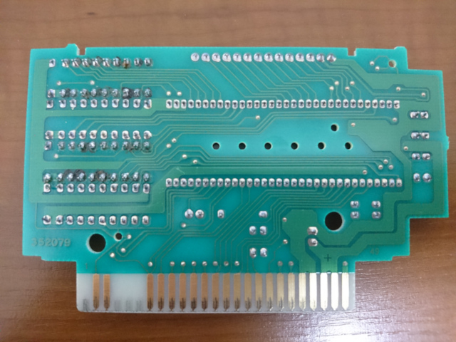
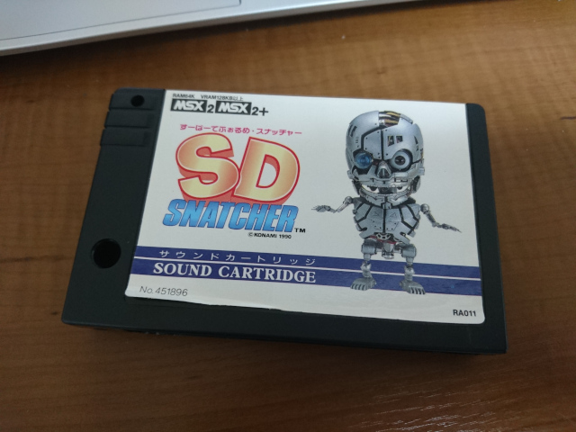

[前]
DRAMの足が細くて、穴も小さいので、無理矢理力をかけると足が曲がってしまいますので注意。
しっかり穴の位置に合うように足の幅を調節してから差し込みます。
ルーペなどでしっかり半田付けできているか確認しておきます。

シュッ太郎で焦がした跡が痛々しいですが、パターンは無事でした。
分解ついでに、カートリッジの端子部分も、接点復活材＆接点用グリスで綺麗＆保護にしてからカートリッジケースを取り付けます。

最初のページで見せたこの写真。実は、改造後にケースを閉じた後の写真だったりします。
入手時点で少しめくれ上がって、粘着部分に汚れが付着していたラベルですが、
今回、穴を露出させるためにめくりあげたために、ラベルのめくれが広がってしまいました。
さらに、上側面の部分も剥がれてめくれ始めたので、ラベルを貼り直すことにしました。
スキャナでスキャンして、画像加工ツールで汚れを目立たないように加工、色なども調整。
等して作ったラベルを、超耐水光沢インクジェットラベルに印刷して貼り付けます。
[次]